红队 | Windows命名管道
什么是命名管道
先说什么是管道:
msdn文档:
A pipe is a section of shared memory that processes use for communication. The process that creates a pipe is the pipe server. A process that connects to a pipe is a pipe client. One process writes information to the pipe, then the other process reads the information from the pipe.翻译就是:管道就是一部份共享内存以便进程可以用来相互通信，创建了Pipe内核对象的进程就是一个Pipe Server, 当另一个进程与这个进程创建的Pipe Server连接时，就称为Pipe Client.当一个进程往Piple当中写入信息时，另一个进程便可以从这个Pipe读出这个信息。
那么实际上管道就是一个内核对象,实现原理就是进程间有一块公共的内存
在windwos操作系统中,管道有两种:
匿名管道Anonymous pipes：匿名管道是基于字符和半双工的（即单向），只能本地使用
命名管道Named pipes：命名管道则强大的多，它是面向消息和全双工的，同时还允许网络通信，用于创建客户端/服务器系统。可通过名称引用；支持多客户端连接；支持双向通信；支持异步重叠 I/O
匿名管道由于只能在本地使用,操作空间较少,本文主要探讨命名管道
查看管道列表
想要查看管道列表需要具有一定的本地操作权限。以下查看管道列表方法均是在本地查看。
Process Explorer查看所有程序的命名管道
Find -->Find Handle or DLL-->\Devide\NamedPipe-->Search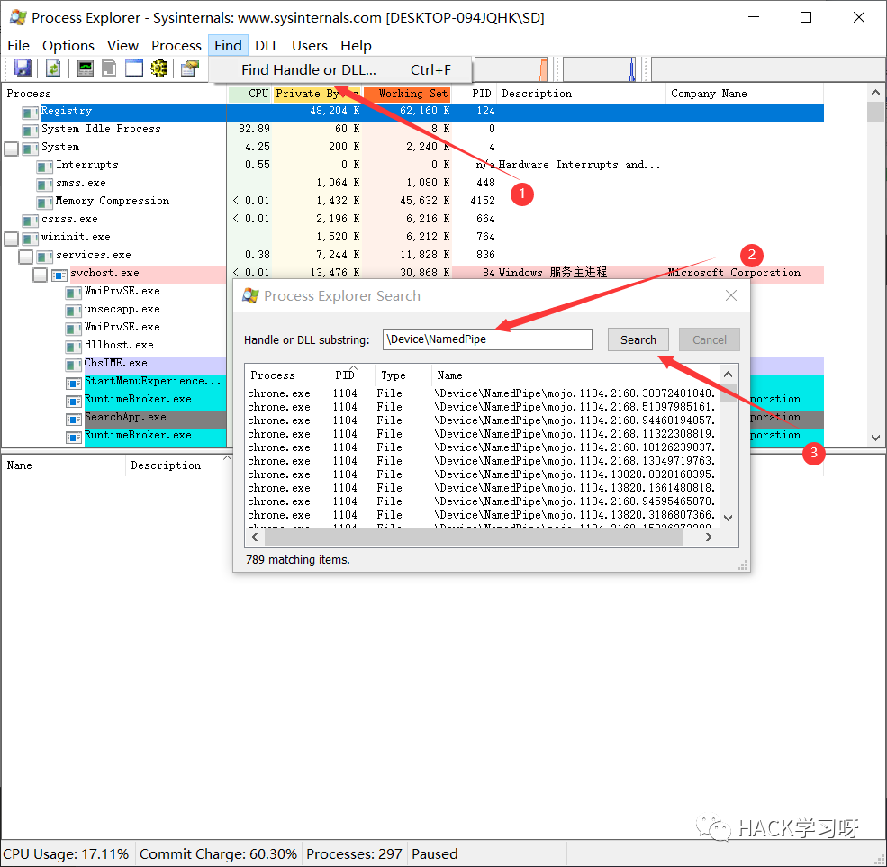
powershell查看命名管道
PowershellV3以下:
[System.IO.Directory]::GetFiles("\\.\\pipe\\")PowershellV3以上:
[System.IO.Directory]::GetFiles("\\.\\pipe\\") 或 Get-ChildItem \\.\\pipe\\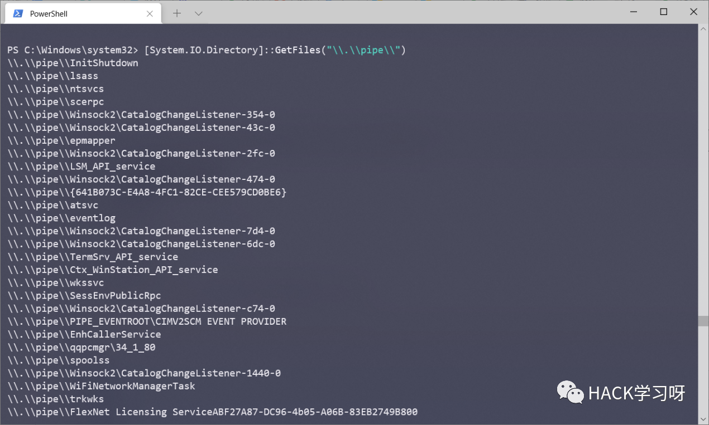
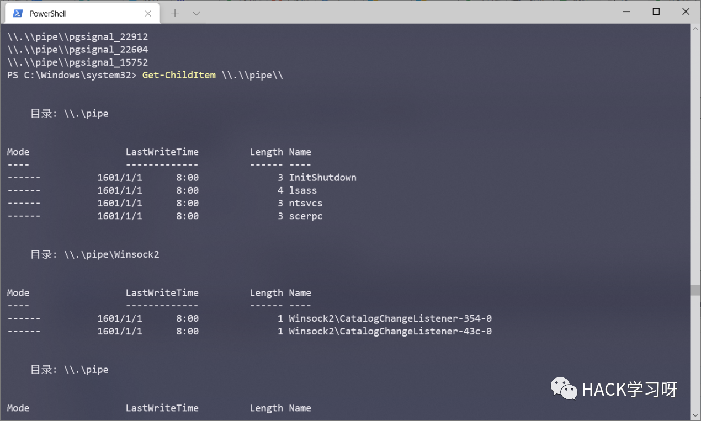
chrome中查看命名管道
file://.//pipe//
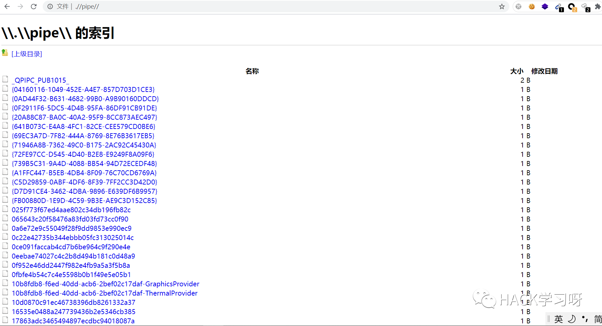
正常情况下，管道客户端是无法直接获取管道服务列表的。因此管道客户端Pipe Client要想连接管道服务端Pipe Server，就必须得知道服务端的管道名称。
命名管道的创建与访问
创建命名管道只能在本机上创建，且得具有一定的权限。管道名称字符串可以包含反斜杠以外的任何字符，包括数字和特殊字符。整个管道名称字符串最多可以包含 256 个字符。管道名称不区分大小写。
使用c++创建命名管道
原理：
服务端用 CreateNamedPipe 创建命名管道，然后调用 ConnectNamedPipe 等待客户端连接。
客户端调用 WaitNamedPipe 来等待服务端管道的建立，而后用 CreateFile 连接管道。
连接成功后，双方进行通信。
CreateNamedPipe:HANDLE CreateNamedPipeA(LPCSTR lpName,DWORD dwOpenMode,DWORD dwPipeMode,DWORD nMaxInstances,DWORD nOutBufferSize,DWORD nInBufferSize,DWORD nDefaultTimeOut,LPSECURITY_ATTRIBUTES lpSecurityAttributes);ConnectNamedPipe:BOOL ConnectNamedPipe(HANDLE hNamedPipe,LPOVERLAPPED lpOverlapped);WaitNamedPipeBOOL WaitNamedPipeA(LPCSTR lpNamedPipeName,DWORD nTimeOut);CreateFileHANDLE CreateFileW(LPCWSTR lpFileName,DWORD dwDesiredAccess,DWORD dwShareMode,LPSECURITY_ATTRIBUTES lpSecurityAttributes,DWORD dwCreationDisposition,DWORD dwFlagsAndAttributes,HANDLE hTemplateFile);
具体参数这里不就在介绍了，可以自行阅读windows官方文档
https://docs.microsoft.com/en-us/windows/win32/api/winbase/nf-winbase-createnamedpipeahttps://docs.microsoft.com/en-us/windows/win32/api/namedpipeapi/nf-namedpipeapi-connectnamedpipehttps://docs.microsoft.com/en-us/windows/win32/api/winbase/nf-winbase-waitnamedpipeahttps://docs.microsoft.com/en-us/windows/win32/api/fileapi/nf-fileapi-createfilew
服务端
constexpr auto BUF_SIZE = 1024;int main(){HANDLE hPipe;char buf_msg[BUF_SIZE]; //传递的最大字节数DWORD dwRcv; //实际接收到的字节数//创建命名管道,命名为MyPipe,消息只能从客户端流向服务器,读写数据采用阻塞模式,字节流形式,超时值置为0表示采用默认的50毫秒hPipe = ::CreateNamedPipe(L"\\\\.\\pipe\\MyPipe", PIPE_ACCESS_INBOUND, PIPE_READMODE_BYTE | PIPE_WAIT | PIPE_ACCEPT_REMOTE_CLIENTS, PIPE_UNLIMITED_INSTANCES, BUF_SIZE, BUF_SIZE,0,NULL);if (hPipe == INVALID_HANDLE_VALUE){printf("[!] Failed to create named pipe!Error code: %x\n",::GetLastError());system("pause");return FALSE;}else{printf("[+] Named pipe created successfully...\n");printf("[+] Waiting for connection on name pipe：MyPipe\n");}if (::ConnectNamedPipe(hPipe, nullptr)){printf("{+] A client connected...\n");memset(buf_msg, 0, BUF_SIZE);//读取数据while(1){if (::ReadFile(hPipe, buf_msg, BUF_SIZE, &dwRcv, nullptr)){printf("[+] Message Should have received max bytes: %d, actually received bytes: %d\n", BUF_SIZE, dwRcv);}else{printf("[!] Failed to receive message!Error code: %x\n", ::GetLastError());::CloseHandle(hPipe);::system("pause");return FALSE;}}}::CloseHandle(hPipe);::system("pause");return 0;}
客户端:
using namespace std;int main(){HANDLE hPipe;char Buffer[1024];DWORD dwRcv; //实际发送的字节数printf("[+] Try to connect named pipe...\n");//连接命名管道if (::WaitNamedPipe(L"\\\\.\\pipe\\MyPipe", NMPWAIT_WAIT_FOREVER)){//打开指定命名管道hPipe = ::CreateFile(L"\\\\.\\pipe\\MyPipe", GENERIC_WRITE, 0, nullptr, OPEN_EXISTING, FILE_ATTRIBUTE_NORMAL, nullptr);if (hPipe == INVALID_HANDLE_VALUE){printf("[!] Failed to open the appointed named pipe!Error code: %x",::GetLastError());::system("pause");return FALSE;}else{printf("[+] The named pipe was successfully connected. Name is MyPipe\n");while(1){gets_s(Buffer);if (::WriteFile(hPipe, Buffer, strlen(Buffer), &dwRcv, nullptr)){printf("[+] Message sent successfully... %d bytes were sent\n", dwRcv);}else{printf("[!] Failed to send message!Error code: %x\n ", ::GetLastError());::CloseHandle(hPipe);::system("pause");return FALSE;}}}::CloseHandle(hPipe);}::system("pause");return 0;}
运行效果,这里是一端读一端写
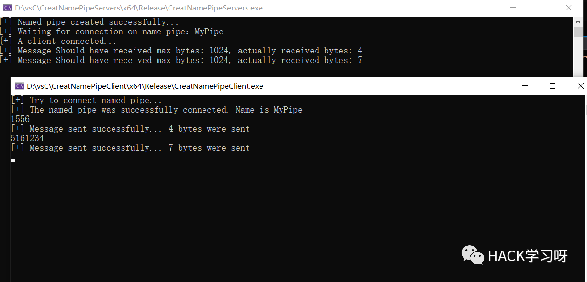
查看下管道
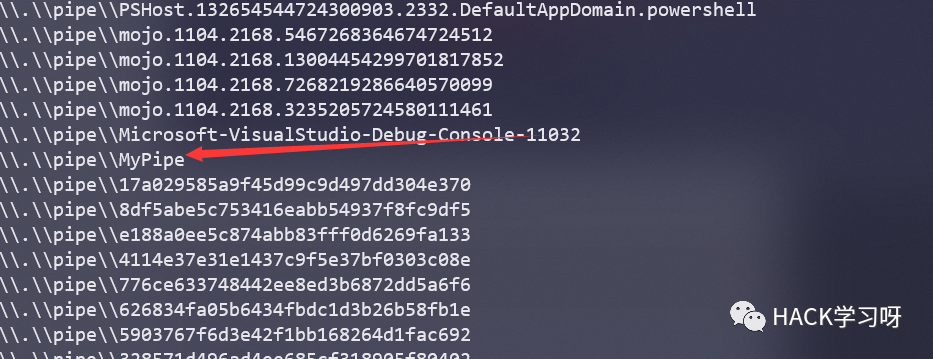
使用powershell创建管道
$PipeSecurity = New-Object System.IO.Pipes.PipeSecurity$AccessRule = New-Object System.IO.Pipes.PipeAccessRule( "Everyone", "ReadWrite", "Allow" )$PipeSecurity.AddAccessRule($AccessRule)$pipe = New-Object System.IO.Pipes.NamedPipeServerStream("SD","InOut",10, "Byte", "None", 1024, 1024, $PipeSecurity)write "Named Pipes Create Success!"$pipe.WaitForConnection()$pipeReader = new-object System.IO.StreamReader($pipe)$Null = $pipereader.ReadToEnd()
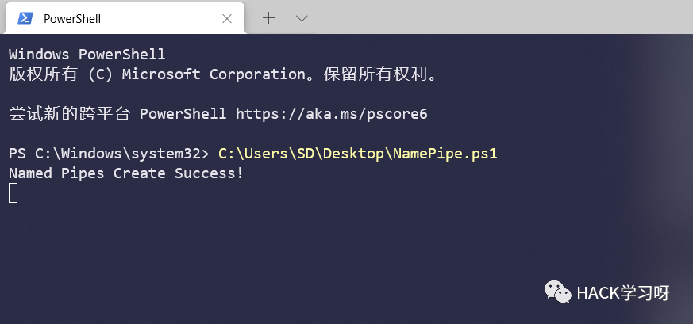
创建完成之后，使用 [System.IO.Directory]::GetFiles("\\.\\pipe\\") 命令可以查看到我们创建的SD命名管道
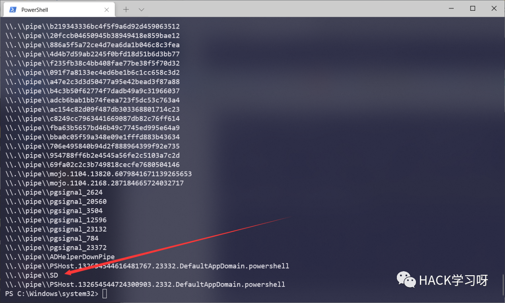
命名管道的访问
虽然命名管道支持跨计算机跨网的访问连接，但是会受到访问控制列表（ACL）或者说本地策略限制。
在 windows server 2003 及以下的版本中，默认开启了匿名管道通信；win2003之后的系统默认禁止匿名管道通信。
windows server 2003 的默认本地策略，默认允许部分管道匿名访问。
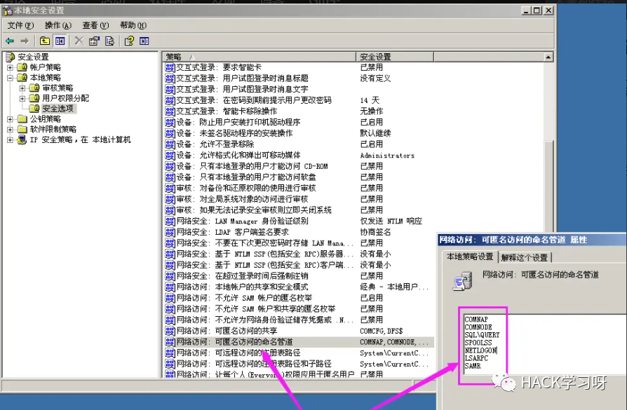
而windows server 2008 的默认本地策略，完全禁止匿名访问管道。
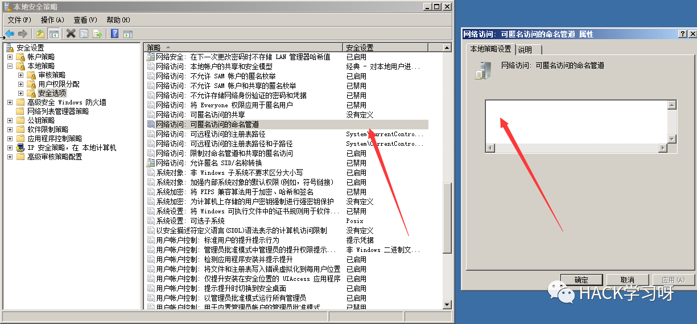
也就是说，在win2003以后，或者说在禁止匿名访问命名管道的系统中，如果想要实现远程管道访问，与管道进行通信，就必须需要一个有效的身份进行验证。比如建立 smb 连接，或者建立 IPC 连接等。
我们在本地创建一个名为SD的命名管道,ip为192.168.1.3
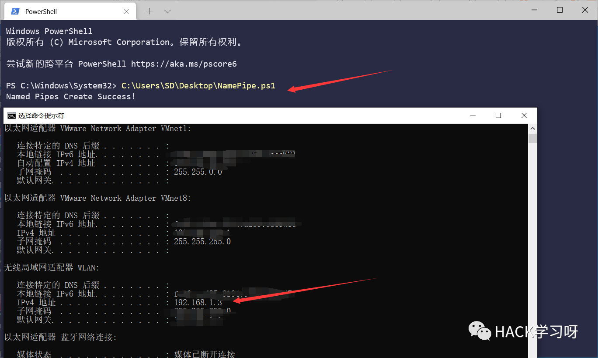
用另一台主机去连接
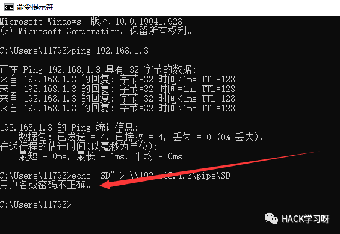
当我们建立ipc连接后就不会提示用户名或密码不正确了
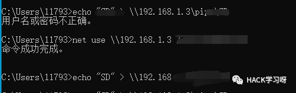
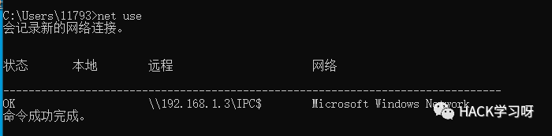
就是说相当于需要提供账户名密码这类东西证明身份,非匿名的访问
C2 信道
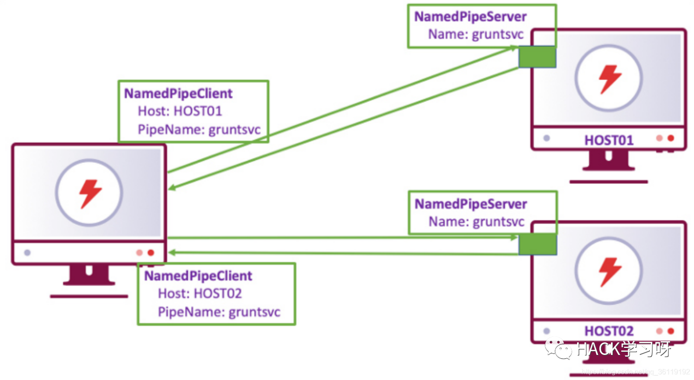
命名管道还常被用作 C2 信道，通讯执行命令。
如图所示，每个终端将为每个直接连接的子终端提供一个命名管道服务器和一个命名管道客户端。服务器监听管道名称，并等待客户端的连接。客户端连接到特定主机名和管道名称的服务器，从而创建命名管道。管道的每一个终端都有从另一个终端读取和写入的能力，即，将 Payload 运行（注入）后，创建了自定义命名管道（作服务端），等待连接即可，这一过程被称为 " 绑定 "（Bind）连接。
这种连接方式很常见，如 Metasploit 和 Cobalt Strike 都有类似功能。
ms17010和命名管道
我们在使用msf打域内有永恒之蓝的主机时,ms17010_command 和 ms17010_psexec 模块都是依赖于Named Pipe进行攻击的。而大于win2003的机器，默认是关闭了所有的可匿名访问的命名管道，所有用这些工具打win2003之后的系统会提示找不到Named Pipe。
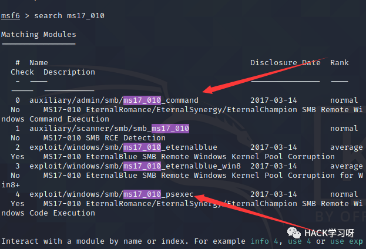
以 ms17_010_command 为例，对 server 2008 尝试攻击
可以看到失败了
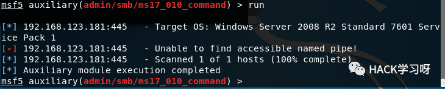
那么，在设置 2008 匿名访问，或提供有效的身份验证后，就可以执行成功。
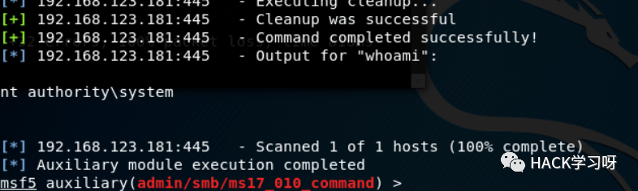
参考
https://cloud.tencent.com/developer/article/1625924https://my.oschina.net/u/4944872/blog/4902113

推荐阅读：
本月报名可以参加抽奖送暗夜精灵6Pro笔记本电脑的优惠活动

点赞，转发，在看
原创投稿作者：Buffer